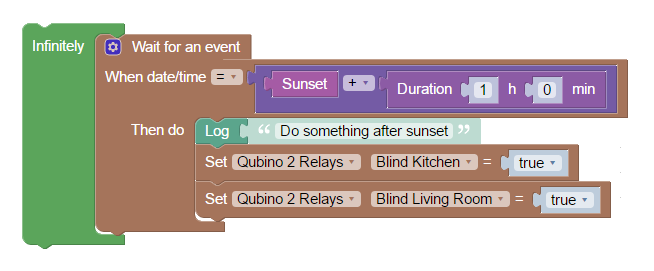
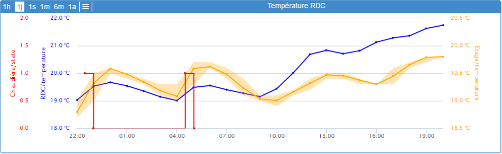

Yadoms is free !
Forget pricing and proprietary softwares, Yadoms is fully open source and fully free. Downloads and use it.
If you want the source code, no problem, go on our  github page, download it and help us to make it better !
github page, download it and help us to make it better !
Yadoms is released under GPL v3 licence.
All plugins, widgets and scripts developped are release under LGPL v3 licence.
Control your house
Your home obeys your every orders
Automate your house
Build scenarii to automate tasks like watering your garden
or auto-close blinds when night is falling.
You can also ask to Yadoms to send you an SMS
if you forget to close garage door at night fall.
With Yadoms, Automation is as simple as a puzzle game !


Acquire,
Follow,
Analyze,
Visualize your data
Be notified
Receive notification when someone rings to your door or when your house plants needs water !
Keep ownership of your data
Because your privacy is important, Yadoms keep your data in your house
One solution to rule them all
Collect and Drive all your devices from many brands with only one software

Run on many devices
You can run Yadoms server on many devices like an old Windows XP machine,
a Linux machine, a raspberry PI even on a Mac.

Windows
Yadoms support a wide range of Windows version from Windows XP™ to Windows 10™

Linux
Yadoms support many Linux distribution like Ubuntu, Debian, Fedora, etc.

Mac
Yadoms support many OSx version from Maverick™ to newest

Light weight Hardwares
Yadoms is very light and use only standard libraries that can be rebuilt to run on lightweight hardware like a raspberry PI.
Expand features
Many Plugins available to expand server functionnalities and device communication.
Lots of widgets to display your customized dashboard.